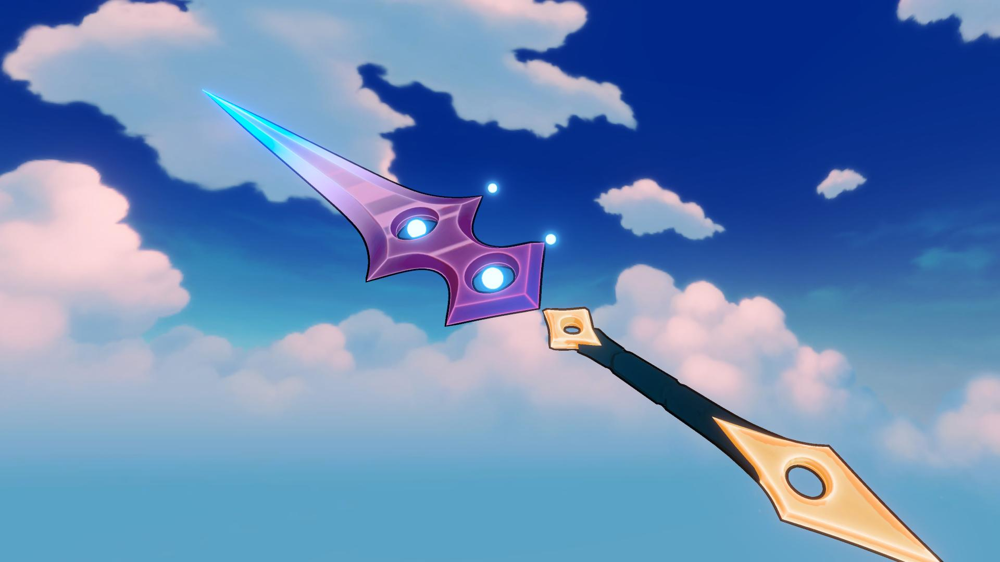
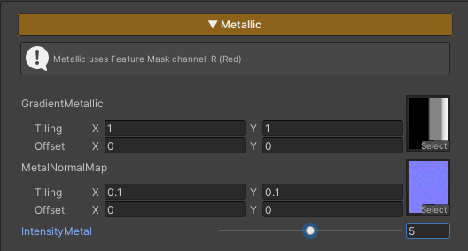

Metallic is used for character parts made of metal materials, adding shine and surface depth.
If no Feature Mask (Red Channel) is assigned to define the active area, this feature will not be applied.
T_Gradient_Metallic texture to control the metallic reflection behavior. Adjusting Tiling and Offset is not recommended, in order to achieve results as intended by the designT_Normal